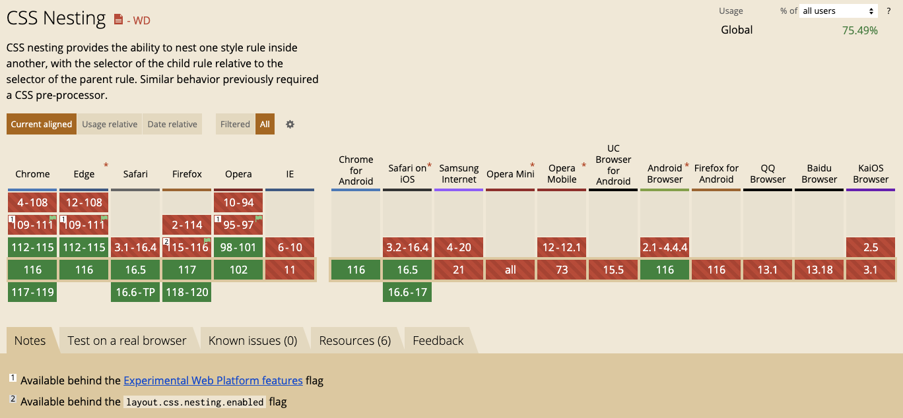
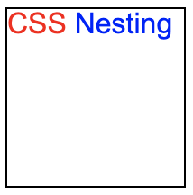
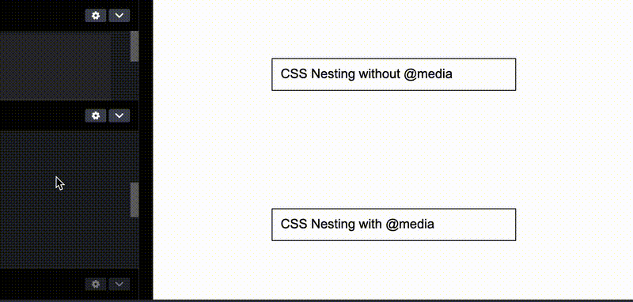

HaoTian · 2024-12-16 13:31:02
很早之前，就写过一篇与原生嵌套相关的文章 -- CSS 即将支持嵌套，SASS/LESS 等预处理器已无用武之地？，彼时 CSS 原生嵌套还处于工作草案 Working Draft (WD) 阶段，而今天（2023-09-02），CSS 原生嵌套 Nesting 终于成为了既定的规范！
在之前，只有在 LESS、SASS 等预处理器中，我们才能使用嵌套的写法，像是这样：
div {
& > p {
color: red;
}
&:hover {
color: yellow;
}
}
从 Chrome 112 开始，原生 CSS 也可以使用嵌套语法了。
其语法规则大致如下：
parentRule {
/* parent rule style properties */
& childRule {
/* child rule style properties */
}
}
大部分同学对嵌套应该还是非常熟悉的，下面我们一起看看，CSS 原生嵌套的能力边界，语法支持范围。
这个很好理解，直接看 DEMO：
<div class="g-container">
<h3 class="g-h3">
CSS
<span class="g-span">Nesting</span>
</h3>
</div>
div {
border: 1px solid #000;
.g-h3 {
color: red;
.g-span {
color: blue;
}
}
}
效果如下：
当然，这里有个值得注意的点。如果我们不使用具体的 ClassName，而是使用标签名称选择器，像是这样：
div {
border: 1px solid #000;
h3 {
color: red;
span {
color: blue;
}
}
}
嵌套规则是不会生效的，此时，我们需要在标签名称选择器前，加上 & 符合：
div {
border: 1px solid #000;
& h3 {
color: red;
& span {
color: blue;
}
}
}
与 SASS 等类似，& 符号在嵌套中，也表示嵌套的父选择器本身，因此，上面两个嵌套选择器最终的表达式实则为：
div h3 { color: red };div h3 span { color blue };直接上代码，这个也是传统 CSS 预处理器支持的内容：
div {
/* ... */
&:hover {
color: red;
}
&:is(.content, footer) {
padding: 16px;
}
&::before {
content: "";
/* ... */
}
}
上述代码中，我们能够在嵌套中使用伪类、伪元素。
这个就比较有意思了，我们甚至可以在嵌套中，使用媒体查询语法。
<div class="g-container">
<h3>CSS Nesting without @media</h3>
</div>
<div class="g-container media">
<h3>CSS Nesting with @media</h3>
</div>
.media {
@media (min-width: 600px) {
& h3 {
color: red;
}
}
}
此时，下方带有 .media class 的容器，在视口宽度大于 600px 的时候，设置 color: red。
效果如下：
完整的 DEMO，你可以戳这里试一下：CodePen Demo -- CSS Nesting Demo
哈？什么是在嵌套中嵌套自身？
其实也很好理解，也就是 & 符号的时候，上面提到了，& 符号在嵌套中，也表示嵌套的父选择器本身，因此，我们还可以有这样的写法：
div {
& h2 & {
/* 表示 div h2 div {} */
}
}
这种写法也是允许的，我们只需要将 & 替换成 div 即可，此时表示 div h2 div {}。
总结而言，CSS 原生的嵌套功能相当强大，基本是传统预处理器的平替。使用嵌套规则的好处在于：
随着兼容性的铺开，慢慢地，我们可以尝试真正运用它们到实际代码中。